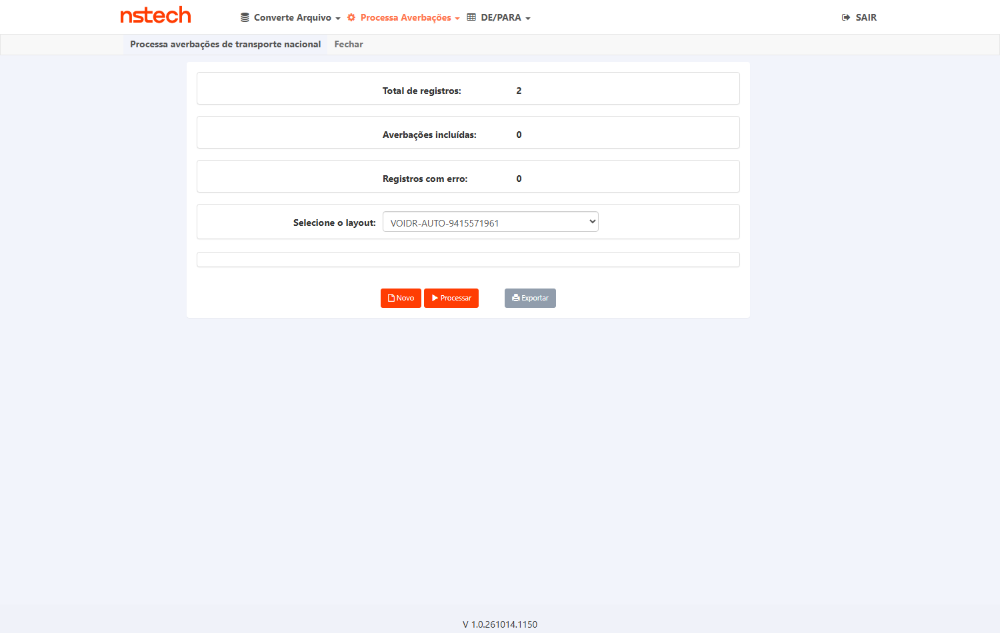
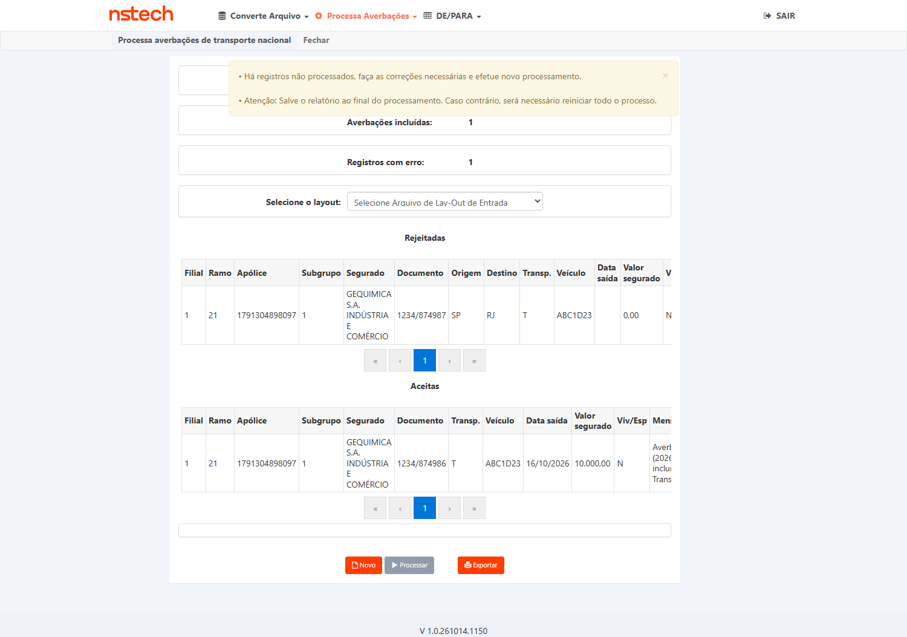
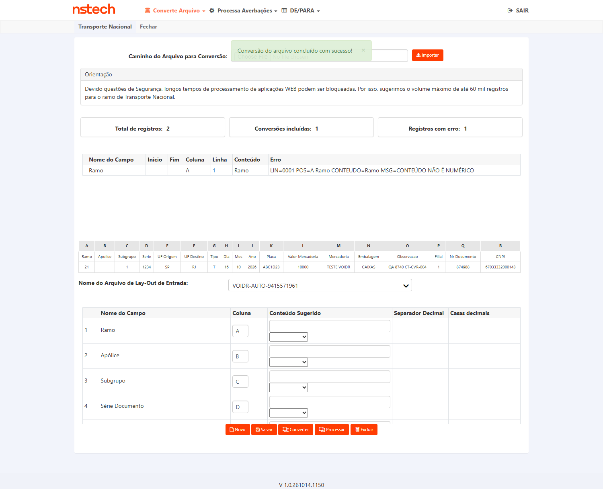
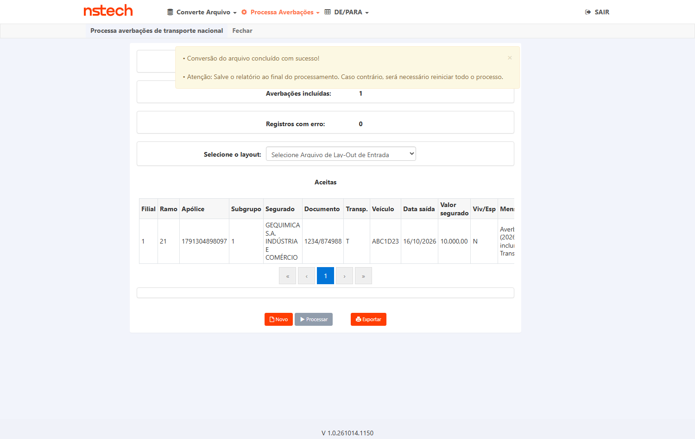
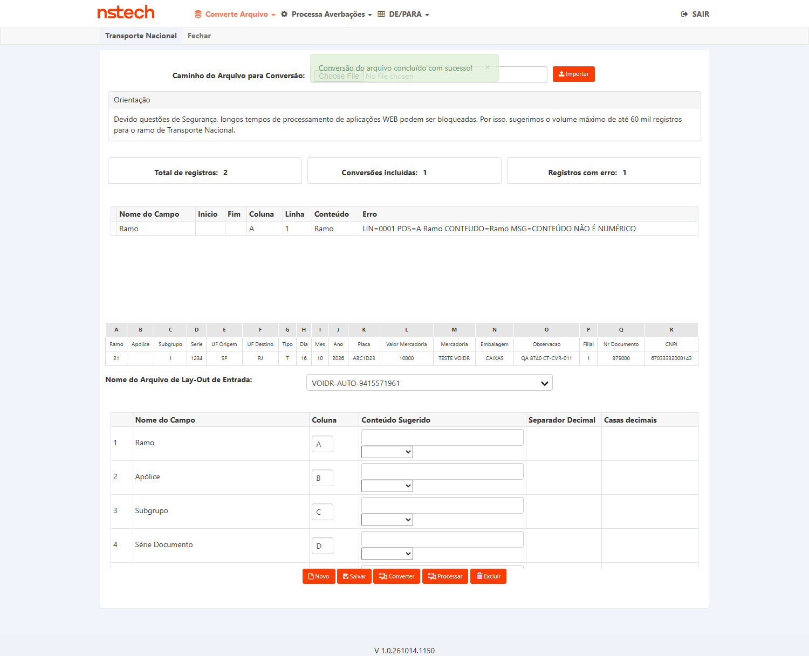
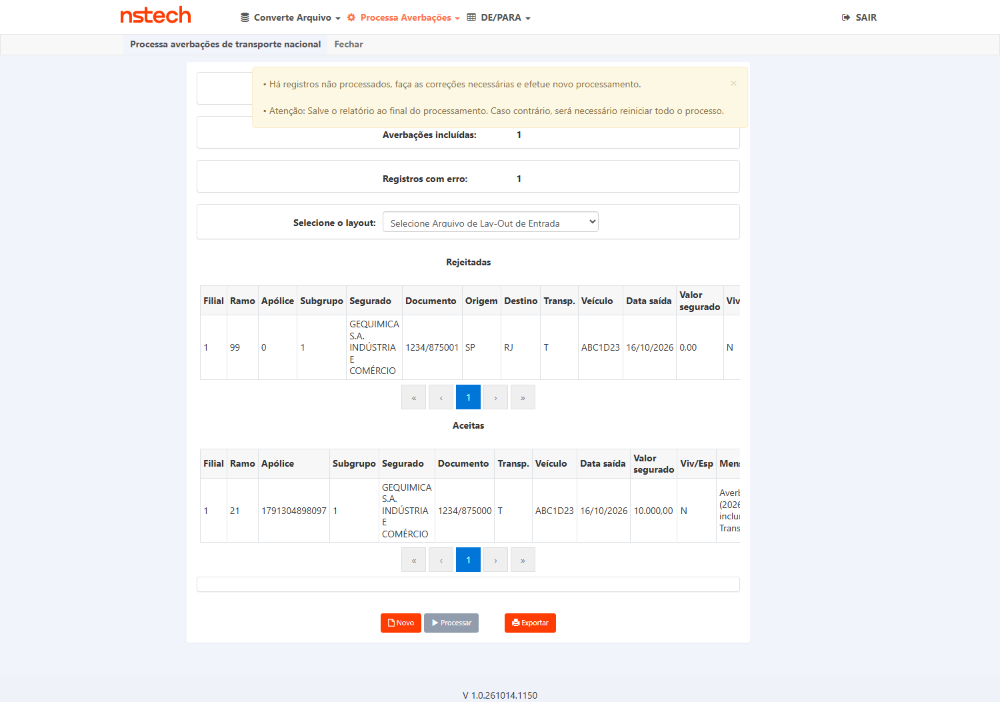
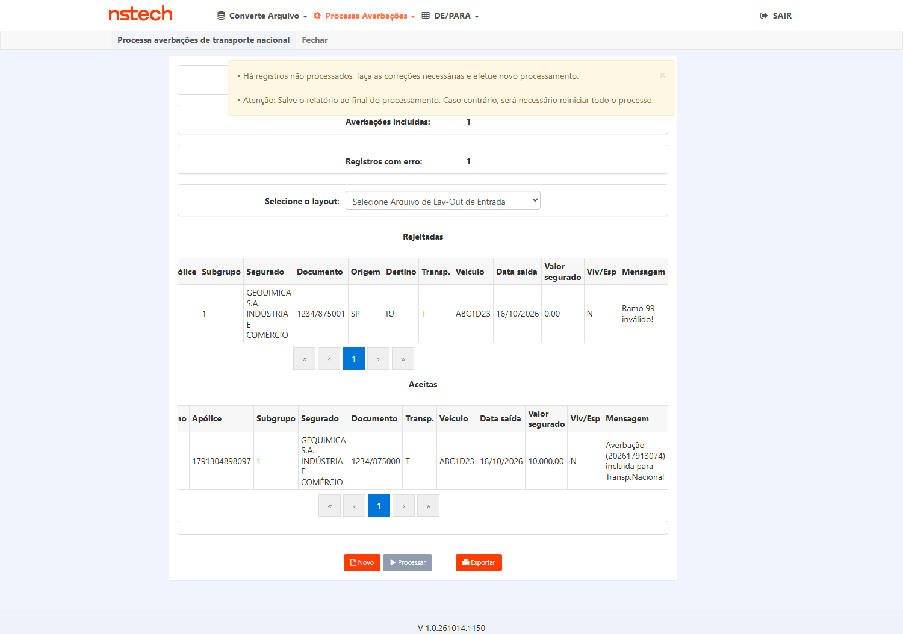

1. Identificação
fairfax-hml-faturamento.nsseg.com.br)2. Descrição
Defeito encontrado pelo QA em exploratório (08/10/2026, build V 1.0.261007.1603): em
Conversor > Processa Averbações > Transporte Nacional, uma linha de ramo válido (21)
com data de saída nula (d_sda_vgm = NULL) na tabela temporária de conversão faz o
Processar falhar com alerta técnico em tela:
"Erro ao salvar dados: Falha no processamento do lote 3: Erro não-SQL no BulkCopy para tabela tb_lay_out_prs_tmp_rjt_cit, lote 3: SqlDateTime overflow. Must be between 1/1/1753 12:00:00 AM and 12/31/9999 11:59:59 PM." + "Há registros não processados, faça as correções necessárias e efetue novo processamento."
Efeitos medidos: o lote inteiro não processa (0 averbações, inclusive a linha válida); contadores contraditórios (Total de registros 2 · Averbações incluídas 0 · Registros com erro 0); vazamento de detalhe técnico ao usuário (nome de tabela, BulkCopy, SqlDateTime). Determinístico (3 execuções, prints finais byte-idênticos).
Comportamento esperado (contrato do card): a linha com data de saída ausente/inválida é listada em Registros com erro com mensagem de negócio (ex.: data de saída não informada); as demais linhas válidas do lote são processadas; nenhum detalhe técnico é exibido; contadores coerentes.
controle_data_nula.py --ramo 21), conforme o critério de aceite 3 do card.3. Escopo
In scope:
- Processa Averbações TRN (ramo 21) com lote misto: linha válida + linha ramo 21 com data de saída nula semeada na temp (CA1);
- Higiene das mensagens ao usuário — ausência de SqlDateTime / BulkCopy / nome de tabela (CA2);
- Coerência dos contadores da tela (Total = incluídas + erros) (CA1);
- Regressão do caminho feliz TRN (lote 100% válido) e do tratamento de ramo inválido do fix #9041 (mesmo pipeline de rejeitadas).
Out of scope:
- #9090 (ramo 99 inválido + data nula → "Ocorreu um erro inesperado!" e coluna Ramo=0 em Rejeitadas) — card próprio do Diego, reteste separado;
- Conversor de outros ramos (RCTR-C, RCTA-C, RCTF-C, RCA-C) e Conversor CITNET;
- Outras seguradoras (regra medida no Fairfax HML; não generalizar);
- Produção (QA não testa em PROD — N/A por norma).
4. Pré-requisitos
V 1.0.261014.1150 (reteste do dev em 14/10); (2) Gate 2 de Produtos APROVADO em 16/10 (comentário no card + task #9149 Done), com ressalva não bloqueante incorporada no CT-CVR-001 (texto exato da mensagem de rejeição).smt-hom-citweb-fairfax — leitura/escrita autorizada em HML para semeadura e oráculo (tabelas tb_lay_out_cvr_tmp_act_cit, tb_mov_avb_nac_cit).1789490910061 (ramo 21, filial 1, subgrupo 1, vigente até 01/09/2027). Reconfirmar vigência na data da execução; a resolução por filial+CNPJ do titular escolhe a mais recente vigente — documentar a apólice efetivamente usada.874980,874981), confirmando antes que a faixa está limpa na temp e em averbações (o script faz esse assert) e limpando a temp ao final.VOIDR-AUTO-9415571961 (colunas A=Ramo, B=Apólice [vazia — resolução por filial+CNPJ], C=Subgrupo, H/I/J=Data de Saída, P=Filial, R=CNPJ...).testes-automatizados/sprint-16-citweb/bug-8740/): controle_data_nula.py (cenário principal — citado no CA3 do card), ct_conversor_ramo_invalido_fairfax.py (helpers/bateria), ct10_ct11_processar_semeado.py, ct011_reteste_rodada2.py. Rodar sequencial — 2 sessões Playwright com o mesmo usuário derrubam a 1ª.5. Casos de Teste
Pré-condições
- Fix do #9091 em HML Fairfax (card "Pronto para homologação"; build da tela > V 1.0.261007.1603 — registrar);
- Faixa de documentos limpa (ex.: 874980/874981) na temp e em
tb_mov_avb_nac_cit; - Apólice TRN do titular vigente na data de saída usada (ver §4).
Passos (execução automatizada — mesma semeadura do achado, CA3 do card)
- Rodar
python controle_data_nula.py --ramo 21 --docs 874980,874981(repo privado, pasta bug-8740). O script executa, em tela e banco: - Login CITWEB Fairfax HML → clicar no módulo Conversor de Arquivos (nova aba);
- Menu Converte Arquivo → Transporte Nacional: importar XLSX com 1 linha válida (ramo 21, doc 874980, data de saída = hoje), responder Não no modal de conversão TXT, selecionar o layout de entrada
VOIDR-AUTO-9415571961e clicar Converter (1 linha na temp); - Semear via SQL o clone da linha na temp com
c_rmo=21,u_doc_ini=874981,u_seq+1ed_sda_vgm=NULL; conferir por SELECT que a temp tem as 2 linhas (uma com data NULL); - Menu Processa Averbações → Transporte Nacional (link visível); selecionar o layout no combo de layout de conversão; aguardar a tela carregar os totais;
- Clicar Processar e aguardar os TOTAIS mudarem (até 240s); capturar screenshot e o texto integral da tela;
- Oráculo de banco: SELECT em
tb_mov_avb_nac_citporu_doc_ini IN (874980,874981)e estado da temp antes do cleanup; - Cleanup: DELETE das linhas semeadas na temp (o script faz).
Resultado esperado
tb_mov_avb_nac_cit com u_doc_ini=874980, ramo 21;• Doc 874981 (data nula) listado em "Registros com erro" na tela, com mensagem de negócio indicando a data de saída ausente/inválida (texto exato capturado em tela na execução);
• Sem alerta "Erro ao salvar dados ... SqlDateTime overflow" e sem "Ocorreu um erro inesperado!";
• Nenhuma linha residual do par na temp após o fluxo normal de limpeza.
Tipo: Negativo (tratamento de dado inválido) + Positivo (linha válida processa). Oráculo: TELA (grid Registros com erro + mensagem) + BANCO (averbação criada). Rastreia: CA1, CA3.


Pré-condições
- Mesma rodada do CT-CVR-001 (a verificação é feita sobre o texto integral da tela pós-Processar capturado naquela execução).
Passos
- Na tela pós-Processar do CT-CVR-001, extrair o texto integral do body (o script salva
tela_pos_processar); - Varrer o texto pelos termos proibidos (case-insensitive):
SqlDateTime,BulkCopy,tb_lay_out_prs_tmp_rjt_cite qualquer identificadortb_*; - Conferir que a mensagem da linha rejeitada é de negócio (fala de data de saída, não de tabela/lote técnico);
- Screenshot da área de mensagens legível.
Resultado esperado
Tipo: Negativo (conteúdo de mensagem). Oráculo: TELA (texto integral extraído + screenshot). Rastreia: CA2.

Pré-condições
- Mesma rodada do CT-CVR-001.
Passos
- Na tela pós-Processar, extrair os 3 contadores: Total de registros, Averbações incluídas, Registros com erro (o script extrai por regex do texto da tela);
- Comparar: Total = incluídas + erros; confrontar com o oráculo de banco do CT-CVR-001 (1 averbação criada, 1 rejeitada em tela);
- Screenshot dos totalizadores legíveis.
Resultado esperado
Tipo: Positivo (consistência de totalizadores). Oráculo: TELA (contadores) cruzada com BANCO. Rastreia: CA1.

Pré-condições
- Fix em HML; doc exclusivo limpo na faixa 874xxx; apólice TRN vigente (ver §4).
Passos
- Converte Arquivo → Transporte Nacional: importar XLSX com 1 linha válida (ramo 21, data de saída = hoje), modal TXT → Não, layout
VOIDR-AUTO-9415571961, Converter; - Sem semeadura — temp fica só com a linha válida;
- Processa Averbações → Transporte Nacional (link visível) → selecionar layout → Processar → aguardar totais;
- Oráculo de banco: averbação criada em
tb_mov_avb_nac_citpara o doc; screenshot dos totais; cleanup. - Base de script:
ct10_ct11_processar_semeado.py ct10(fluxo Processar com molde válido) ou a etapa equivalente docontrole_data_nula.pysem o clone.
Resultado esperado
Tipo: Regressão (happy path). Oráculo: TELA + BANCO. Rastreia: CA1 (parte "as demais linhas válidas são processadas").


testes-automatizados/sprint-17-citweb/pbi-9091/ct004_happy_path_trn.py.Pré-condições
- Fix em HML; par de docs exclusivo limpo na faixa 874xxx; apólice TRN vigente;
- Comportamento de referência: aprovado na rodada 2 do #8740 (08/10/2026) — o fix do #9091 mexe no mesmo pipeline de rejeitadas (BulkCopy) e não pode regredi-lo.
Passos
- Converter 1 linha válida (ramo 21) como no CT-CVR-004;
- Semear via SQL um clone na temp com
c_rmo=99e data de saída preenchida (sem NULL — o caso 99+NULL é o #9090, fora deste plano); - Processa Averbações → TRN → selecionar layout → Processar → aguardar totais;
- Conferir na tela a lista de Rejeitadas com a mensagem
Ramo 99 inválido!e no banco a averbação do doc válido; screenshots; cleanup. - Script de referência:
ct011_reteste_rodada2.py/ct10_ct11_processar_semeado.py ct11.
Resultado esperado
Tipo: Regressão (comportamento do fix #9041). Oráculo: TELA + BANCO. Rastreia: regressão do pipeline (CA1/CA2 por extensão).



6. Matriz de Rastreabilidade
| Critério de aceite do card | CT(s) | Resultado |
|---|---|---|
| CA1 — Lote misto: a válida vira averbação; a de data nula vai para Registros com erro com mensagem de negócio; sem alerta técnico; contadores coerentes | CT-CVR-001 · CT-CVR-003 · CT-CVR-004 (regressão da parte "válidas processam") | Aprovado |
| CA2 — Nenhuma mensagem ao usuário contém nome de tabela, BulkCopy ou SqlDateTime | CT-CVR-002 (e verificação estendida no CT-CVR-005) | Aprovado |
| CA3 — Reteste pelo QA com a mesma semeadura (controle_data_nula.py --ramo 21) | CT-CVR-001 (usa exatamente o script e a semeadura do achado original) | Aprovado |
| Regressão (obrigatória por norma): pipeline Processar TRN não regride | CT-CVR-004 · CT-CVR-005 | Aprovado |
Cobertura: 3/3 critérios de aceite de produto cobertos (100%). Itens de processo (PR, deploy) não geram CT — são DoD do dev.
8. Riscos
| Risco | Prob. | Impacto | Mitigação |
|---|---|---|---|
| Sessões Playwright simultâneas com o mesmo usuário derrubam a 1ª (medido 06/10) | Média | Falso-negativo de execução | Rodar os CTs sequencialmente; nunca 2 baterias em paralelo no mesmo tenant. |
| Menus homônimos "Transporte Nacional" (Converte × Processa) levam o clique ao link invisível | Média | Trava de 300s / tela errada | Abrir o menu correto e clicar só no link visível (padrão já implementado nos scripts). |
| Execução abortada deixa linhas semeadas na temp (contamina rodada seguinte) | Baixa | Assert de massa limpa falha | Cleanup por DELETE na faixa 874xxx; o script valida faixa limpa antes de iniciar. |
| Defeito #9090 (ramo 99 + data nula) ainda aberto no mesmo fluxo pode confundir a triagem | Média | Reprovação indevida / duplicidade | Fronteira explícita: "Ocorreu um erro inesperado!" com ramo 99+NULL = #9090 (fora); este card cobre só ramo VÁLIDO + data nula. |
| Apólice de referência perder a vigência até a execução | Baixa | Falso-negativo ("fora da vigência") | Reconfirmar vigência na data da execução; a resolução por filial+CNPJ pega a mais recente vigente. |